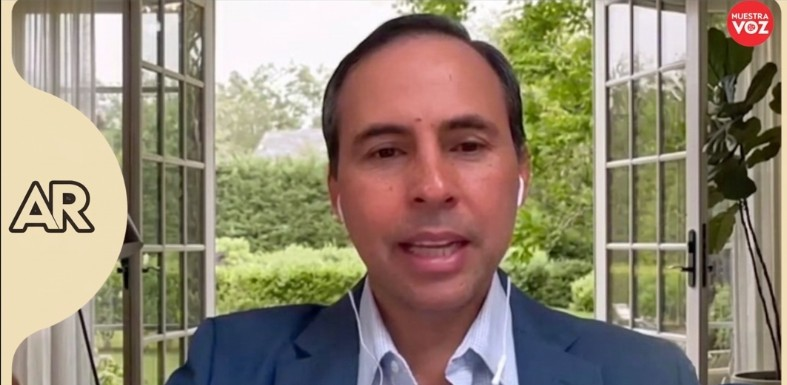

Investigación y Análisis
Boletín N.º 02
La Dirección de Proyectos e Investigación reúne miradas, conocimientos y experiencias diversas que convergen en un mismo propósito: aportar al desarrollo de Costa Rica.
En esta edición, Investigación y Análisis, Sostenibilidad y Cambio Climático, Responsabilidad Solidaria, Innovación Estratégica y la Unidad de Gestión BIM comparten iniciativas, aprendizajes y proyectos que reflejan el valor de la colaboración y la capacidad de transformar desafíos en oportunidades para la organización, el sector profesional y el país.

Investigación y Análisis
Presentación
Les doy la bienvenida a la segunda edición de nuestro boletín, un espacio creado para compartir el conocimiento, las experiencias y las iniciativas que se desarrollan desde la Dirección de Proyectos e Investigación.
Cada edición nos permite mostrar cómo distintas disciplinas y capacidades se articulan para responder a retos relevantes para la organización, el sector profesional y el país. En estas páginas encontrarán contenidos sobre infraestructura, gestión de proyectos dentro del CFIA, sostenibilidad y cambio climático, responsabilidad solidaria, innovación estratégica y gestión BIM, abordados desde una perspectiva técnica, colaborativa y orientada a generar valor.
Más allá de los proyectos y resultados, este boletín también busca visibilizar a las personas y equipos que hacen posible cada iniciativa, así como los aprendizajes que surgen del trabajo conjunto. Compartir estas experiencias nos permite fortalecer capacidades, conectar conocimiento y abrir nuevas oportunidades de colaboración.
Les invito a recorrer esta edición con curiosidad y apertura, a conocer las iniciativas que estamos impulsando y a reflexionar sobre el aporte que, desde nuestras distintas disciplinas, podemos hacer para construir una organización más innovadora, sostenible y preparada para los desafíos del futuro.
Porque transformar retos en oportunidades comienza por compartir conocimiento, conectar capacidades y trabajar con un propósito común.
Para tener en cuenta